Canopy_scaling.RmdThe aim of this tutorial is to show how to scale the gas exchange predictions from the leaf level to the canopy. In this tutorial, several assumptions are used to simulate the canopy photosynthesis and transpiration. We consider that apart from the light, the micrometeorological variables are homogeneous inside the canopy (Air temperature, CO2, humidity). We also consider that the leaf size and structure is homogeneous. Those assumptions may be challenged if needed. In this model we consider, as in most of the TBMs, that the vertical gradients of leaf properties are similar for all the photosynthetic parameters (Vcmax, Jmax, Tp and Td).
Basically, in most of the TBMs, the photosynthesis is modeled at the leaf level and the scaling up to the canopy is made using two other elements, the canopy structure and the canopy radiation interception.
The leaf level photosynthesis is modeled using the function f.A. This function allows to simulate the leaf gas exchange using input environmental variables surrounding the leaves (Q, RH, Tair, Tleaf) and the leaf photosynthetic parameters (produced using the function f.make.param()). This function couples 2 different models: (i) The Farquhar et al. 1980 model itself which describes the rate of photosynthesis from the intracellular CO2 concentration, and (ii) the conductance model, which calculates the intracellular CO2 from the leaf surface CO2 and environmental factors that modify the conductance of the stomata.
The canopy structure corresponds to the vertical organization of the forest, the size of the leaves and their orientation. The vertical gradients of leaf properties are also represented, and notably the vertical structure of Vcmax, Jmax, TPU and Rd. For those representations, different equations can be used, see for example Clark et al. 2011, Lloyd et al. 2010 or Krinner et al. 2005.
The canopy radiation interception simulates the light levels that each leaf receives inside the canopy. The light can be diffuse (shaded leaves) or direct (sunlit leaves) depending on the position. The Norman radiation interception model (Norman 1979) is implemented as described in Bonan (2019).
We first model the canopy structure, ie the leaf photosynthetic gradients, the LAI and the total height of the canopy. We consider 20 vertical levels inside the canopy.
# Modeling of the LAI inside the 20 levels of the canopy, with a total LAI of 6.2
LAItot = 6
nlayers=20
dLAI=rep(6/nlayers,nlayers)
LAI=cumsum(dLAI)-dLAI/2 # LAI in the midle of each layer
# Modeling of the vertical structure of the Vcmax at 25 deg C (see the help of the function)
Vcmax=f.VcmaxRef.LAI(kn=0.11,LAI=LAI,Vcmax0=70)
# As in most TBM we model the other photosynthetic parameter from Vcmax
Jmax=1.7*Vcmax; Tp=1/5*Vcmax; Rd=0.03*Vcmax
# We consider that all the other leaf traits described in f.make.param are not vertically structuredWe first model the meterological conditions of a 24 h day. It would be better to have real weather data but for the sake of this example, the simulated data will work as well. Here, we only model the evolution of light during the day, all the other meterological variables are considered constant which is of course a (bad) simplification.
## Simulation of the diurnal variation in irradiance using the function from Takenaka (1989) as used in Hirose and Werger (1987)
PFD_noon=2000
time=seq(0,23,1)
PFD=PFD_noon*(sin(pi*(time-6)/12))^2
PFD[time<6|time>=18]=0
## We assume that all the other variables are constant during the day for simplicity
Tair=Tleaf=25
cs=400
RH=80
##Simulation of weather data
meteo_hourly=data.frame(time=time,RH=RH,Tair=Tair,cs=cs,PFD=PFD,Tleaf=Tleaf)
plot(x=meteo_hourly$time,y=meteo_hourly$PFD,xlab='Time of the day',ylab='PFD in micro mol m-2 s-1')We now represent the light levels inside the canopy during the day. To summarize, the function calculates the sun angle on a position on the earth and calculate the amount of diffuse light and direct light that will be received by the top of the canopy. Then the Norman interception model is used to calculate the light levels inside the canopy.
lat=9.2801048
t.d = 0:23
DOY = 60
canopy=f.canopy.interception(meteo_hourly=meteo_hourly,lat = lat,DOY = DOY,nlayers = nlayers,dLAI = dLAI,LAI=LAI)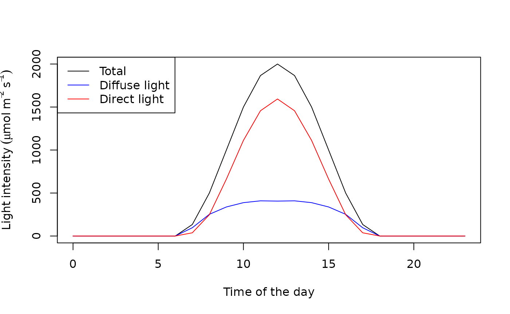
## [1] "Radiation model for a total LAI of 6"
## [1] "Radiation model for a total LAI of 6"
## [1] "Radiation model for a total LAI of 6"
## [1] "Radiation model for a total LAI of 6"
## [1] "Radiation model for a total LAI of 6"
## [1] "Radiation model for a total LAI of 6"
## [1] "Radiation model for a total LAI of 6"
## [1] "Radiation model for a total LAI of 6"
## [1] "Radiation model for a total LAI of 6"
## [1] "Radiation model for a total LAI of 6"
## [1] "Radiation model for a total LAI of 6"
## [1] "Radiation model for a total LAI of 6"
## [1] "Radiation model for a total LAI of 6"
## [1] "Radiation model for a total LAI of 6"
## [1] "Radiation model for a total LAI of 6"
## [1] "Radiation model for a total LAI of 6"
## [1] "Radiation model for a total LAI of 6"
## [1] "Radiation model for a total LAI of 6"
## [1] "Radiation model for a total LAI of 6"
## [1] "Radiation model for a total LAI of 6"
## [1] "Radiation model for a total LAI of 6"
## [1] "Radiation model for a total LAI of 6"
## [1] "Radiation model for a total LAI of 6"
## [1] "Radiation model for a total LAI of 6"
## [1] "Radiation model for a total LAI of 6"
## [1] "Radiation model for a total LAI of 6"
## [1] "Radiation model for a total LAI of 6"
## [1] "Radiation model for a total LAI of 6"
## [1] "Radiation model for a total LAI of 6"
## [1] "Radiation model for a total LAI of 6"
## [1] "Radiation model for a total LAI of 6"
## [1] "Radiation model for a total LAI of 6"
## [1] "Radiation model for a total LAI of 6"
## [1] "Radiation model for a total LAI of 6"
## [1] "Radiation model for a total LAI of 6"
## [1] "Radiation model for a total LAI of 6"
## [1] "Radiation model for a total LAI of 6"
## [1] "Radiation model for a total LAI of 6"
## [1] "Radiation model for a total LAI of 6"
## [1] "Radiation model for a total LAI of 6"
## [1] "Radiation model for a total LAI of 6"
## [1] "Radiation model for a total LAI of 6"
## [1] "Radiation model for a total LAI of 6"
## [1] "Radiation model for a total LAI of 6"
## [1] "Radiation model for a total LAI of 6"
## [1] "Radiation model for a total LAI of 6"
## [1] "Radiation model for a total LAI of 6"
## [1] "Radiation model for a total LAI of 6"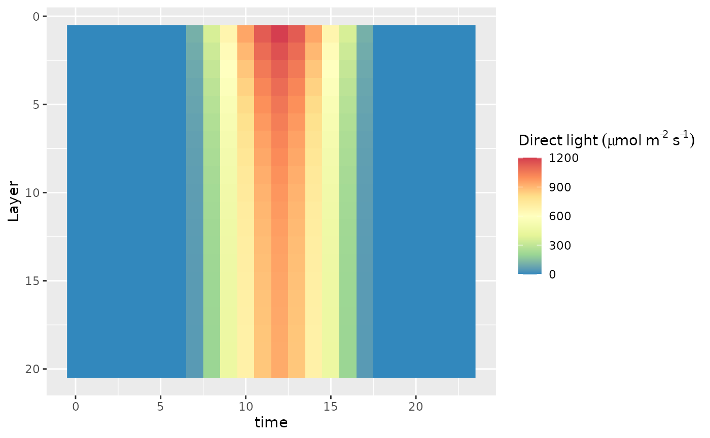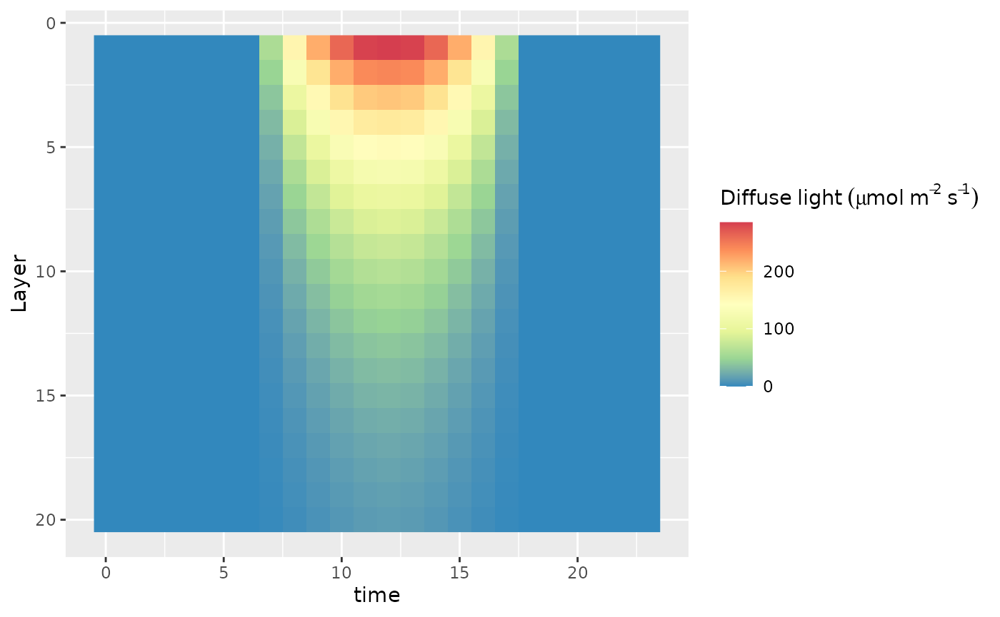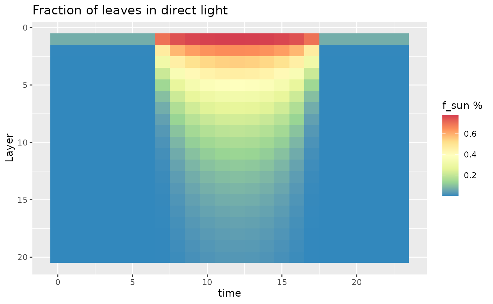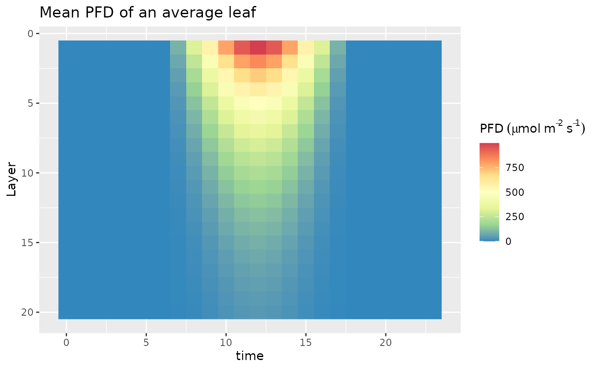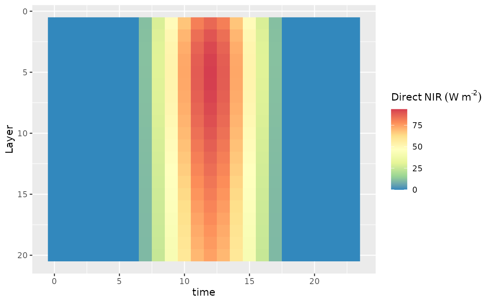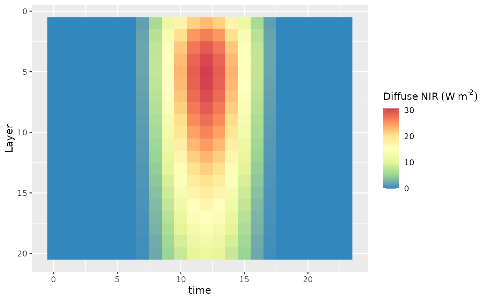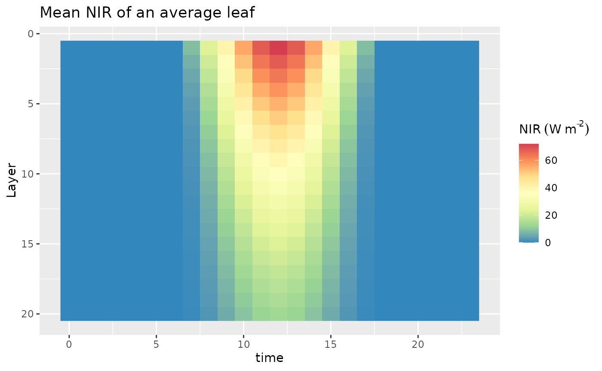
Finally, we calculate the GPP and transpiration of the canopy:
canopy_gasEx=f.GPP(meteo_hourly =meteo_hourly,
Vcmax_Profile = Vcmax,Jmax_Profile =Jmax, Rd_Profile =Rd ,Tp_Profile = Tp,
g0_Profile = rep(0.02,length(Vcmax)),g1_Profile = rep(4,length(Vcmax)),
canopy=canopy,gsmin = 0.01)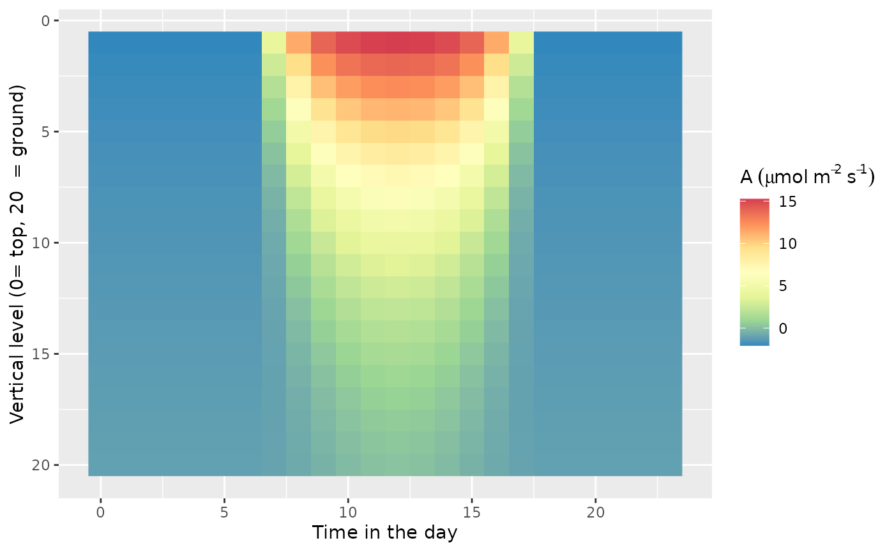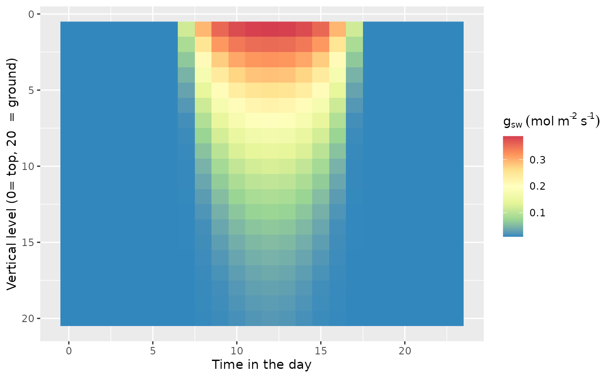
## [1] "GPP = 6396.01584264149 g CO2 m-2 Ground Y-1"
## [1] "ET = 1165.0365897533 L H20 m-2 Ground Y-1"Most of the times, the leaf temperature or canopy temperature is decoupled from the air temperature and the leaf temperature is unknown. A leaf energy budget allows the leaf temperature to be predicted. In our code, we use the Tealeaves package (Muir 2019) to implement the leaf energy budget and to predict the leaf temperature. Several factors modifies the leaf energy budget and we invite you to read the very nicely written paper associated with the Tealeaves package (Muir 2019) to understand them. The input radiation, the leaf conductance and the boundary layer modifies the leaf temperature. To model the leaf gas exchanges by taking into account the energy budget we use the fonction f.AT which is implemented in the function f.GPPT and works similarly to the function f.GPP that we just used.
In the canopy layer, the wind is considered to be stronger at the top of the canopy than on the ground following the Buckley et al. (2014) equation. The rest of the f.GPPT function works very similarly to the f.GPP function. Be careful however, the calculation time is much higher due to the time to compute the energy budget (several minutes for predicting a canopy with 20 layers).
We first add a wind column in our meteo_hourly dataframe wich is necessary for calculating the leaf temperature. For this example we consider that the wind is constant temporally over the course of the day and equal 2 m/s
meteo_hourly$wind=2We then make the predictions using f.GPPT
canopy_gasExT=f.GPPT(meteo_hourly =meteo_hourly,
Vcmax_Profile = Vcmax,Jmax_Profile =Jmax, Rd_Profile =Rd ,Tp_Profile = Tp,
g0_Profile = rep(0.02,length(Vcmax)),g1_Profile = rep(4,length(Vcmax)),
canopy=canopy,gsmin = 0.01)## [1] "Layer 1 of 20 layers"
## [1] "Layer 2 of 20 layers"
## [1] "Layer 3 of 20 layers"
## [1] "Layer 4 of 20 layers"
## [1] "Layer 5 of 20 layers"
## [1] "Layer 6 of 20 layers"
## [1] "Layer 7 of 20 layers"
## [1] "Layer 8 of 20 layers"
## [1] "Layer 9 of 20 layers"
## [1] "Layer 10 of 20 layers"
## [1] "Layer 11 of 20 layers"
## [1] "Layer 12 of 20 layers"
## [1] "Layer 13 of 20 layers"
## [1] "Layer 14 of 20 layers"
## [1] "Layer 15 of 20 layers"
## [1] "Layer 16 of 20 layers"
## [1] "Layer 17 of 20 layers"
## [1] "Layer 18 of 20 layers"
## [1] "Layer 19 of 20 layers"
## [1] "Layer 20 of 20 layers"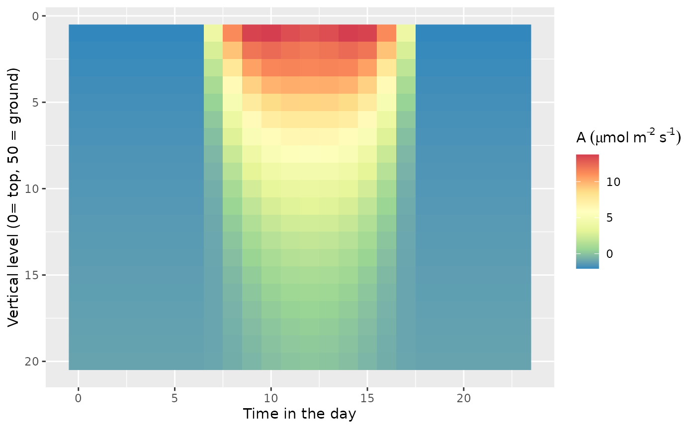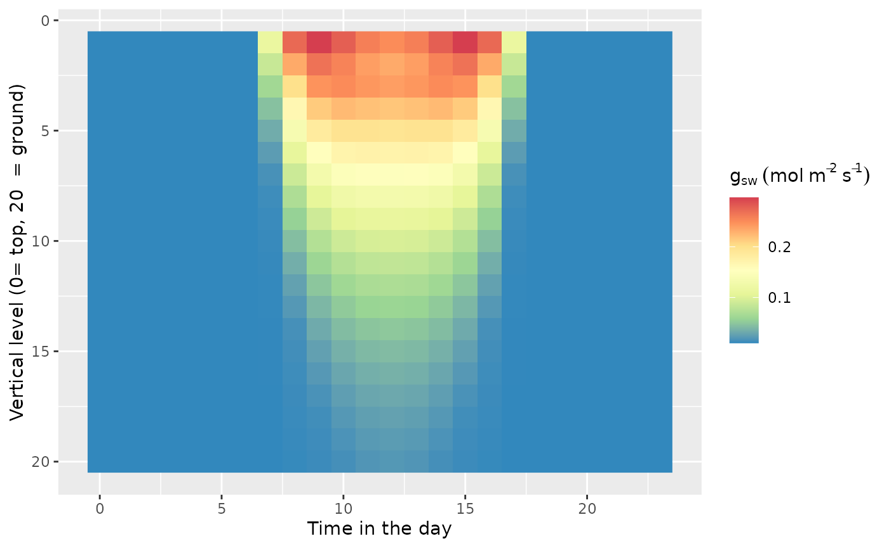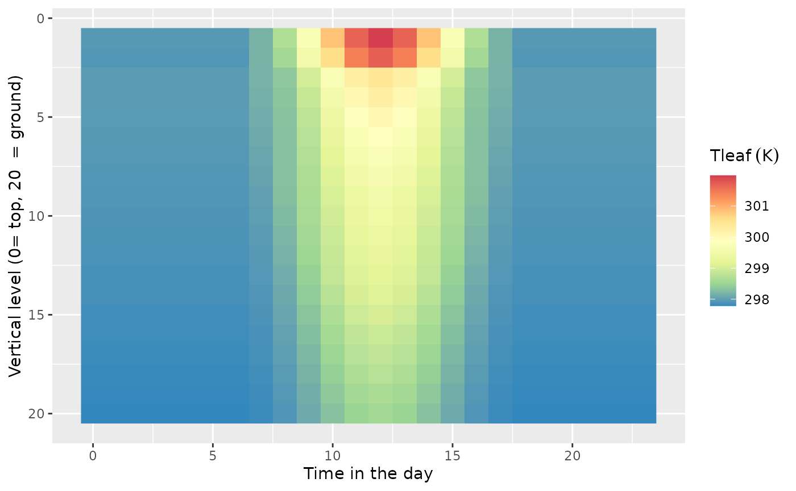
## [1] "GPP = 5574.45193486157 g CO2 m-2 Ground Y-1"
## [1] "ET = 1405.79150422933 L H20 m-2 Ground Y-1"By default three figures are produced which give the vertical and temporal variation of gsw, An and Tleaf in the canopy. Other figures can be produced using the outputs if needed.
For example, if we want to compute a figure with the CO2 at the leaf surface:
CO2_surface=(canopy_gasExT$cs_dir*canopy$f_sun+canopy_gasExT$cs_dif*(1-canopy$f_sun))
CO2_surface=melt(CO2_surface)
(ggplot(data=CO2_surface,aes(x=time,y=Layer,fill=value))+geom_raster()
+scale_fill_distiller(palette = "Spectral", direction = -1) +scale_y_reverse()
+xlab("Time in the day")
+ylab(paste("Vertical level (0= top,",nlayers," = ground)"))
+labs(fill=expression(C[s]~(ppm))))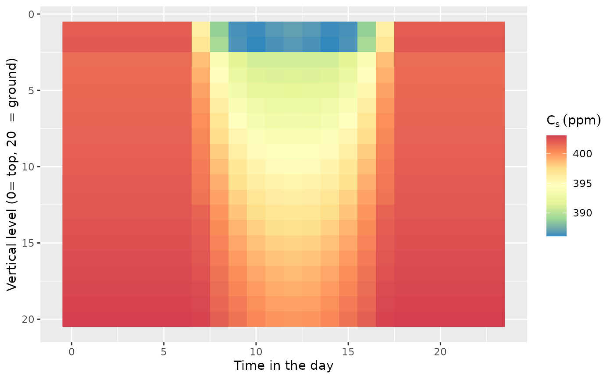
This calculation uses the proportion of leaves in the sun (f_sun) and their associated CO2 (cs_dir) and the proportion of shaded leaves (1-f_sun) with their associated CO2 (cs_dif).
We can do the same for the humidity at the leaf surface
RH_surface=(canopy_gasExT$RHs_dir*canopy$f_sun+canopy_gasExT$RHs_dif*(1-canopy$f_sun))
RH_surface=melt(RH_surface)
(ggplot(data=RH_surface,aes(x=time,y=Layer,fill=value))+geom_raster()
+scale_fill_distiller(palette = "Spectral", direction = -1) +scale_y_reverse()
+xlab("Time in the day")
+ylab(paste("Vertical level (0= top,",nlayers," = ground)"))
+labs(fill=expression(RH[s]~('%'))))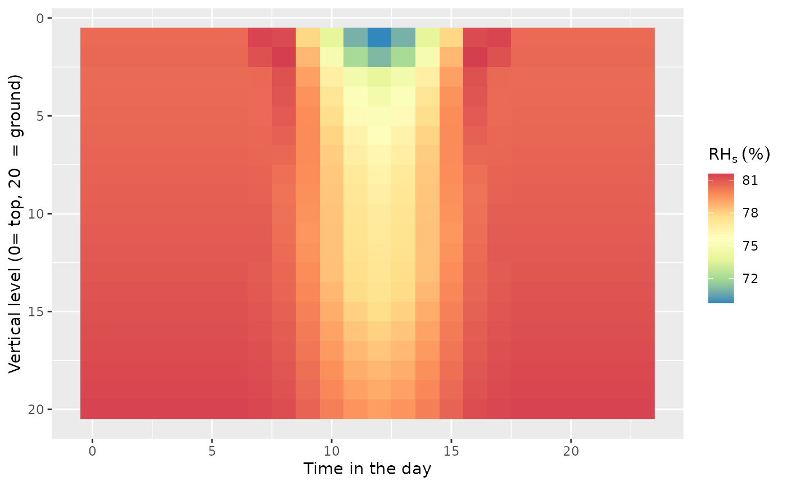
If you are interested in the temperature of the sun leaves or shaded leaves:
Tleaf_sun=canopy_gasExT$Tleaf_dir
Tleaf_sun=melt(Tleaf_sun)
(ggplot(data=Tleaf_sun,aes(x=time,y=Layer,fill=value))+geom_raster()
+scale_fill_distiller(palette = "Spectral", direction = -1) +scale_y_reverse()
+xlab("Time in the day")
+ylab(paste("Vertical level (0= top,",nlayers," = ground)"))
+labs(fill=expression(T[leaf]~sun~('K'))))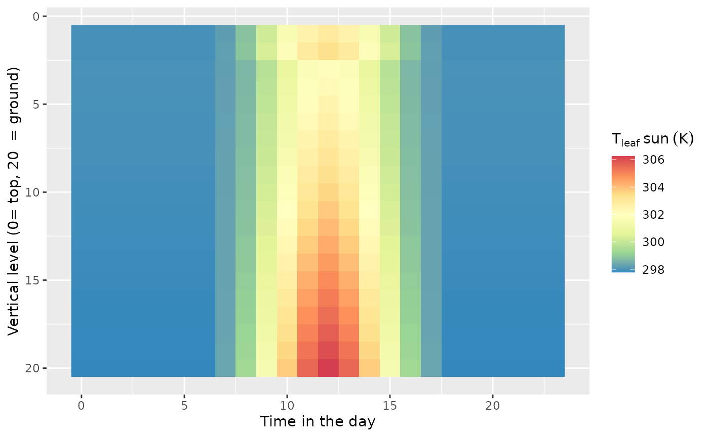
Tleaf_shade=canopy_gasExT$Tleaf_dif
Tleaf_shade=melt(Tleaf_shade)
(ggplot(data=Tleaf_shade,aes(x=time,y=Layer,fill=value))+geom_raster()
+scale_fill_distiller(palette = "Spectral", direction = -1) +scale_y_reverse()
+xlab("Time in the day")
+ylab(paste("Vertical level (0= top,",nlayers," = ground)"))
+labs(fill=expression(T[leaf]~shade~('K'))))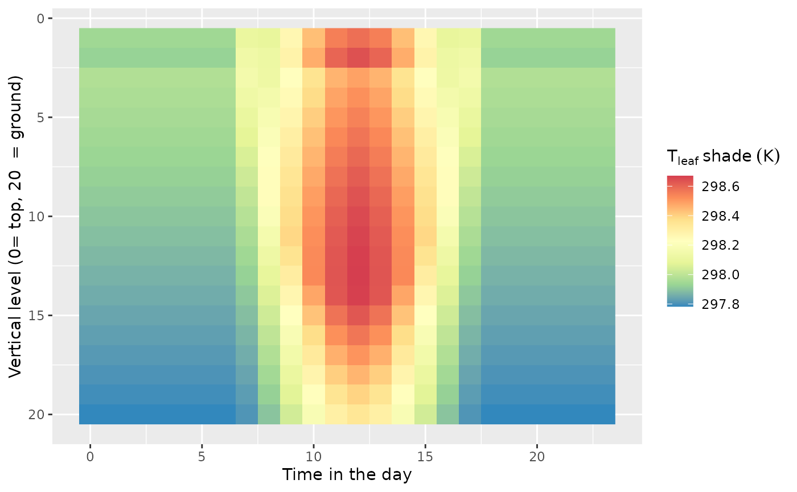
Note that the fraction of sun leaves in the undercanopy is very low, as well as the fraction of shaded leaves in the top of the canopy. Note also that the ‘sun’ leaves show high temperature in the understory. This is because the conductance is lower, therefore not cooling the leaf, due to low Vcmax and A. The wind is also very low, making the leaf heat. However, the proportion of leaves that are in direct sun in the understory is very low, that’s why, overall, the mean temperature of the leaves is higher in the top layer than on the bottom layer (see previous output of the f.GPPT function)
Bonan, G. (2019). Climate change and terrestrial ecosystem modeling. Cambridge University Press.
Buckley, T. N., Martorell, S., Diaz‐Espejo, A., Tomàs, M., & Medrano, H. (2014). Is stomatal conductance optimized over both time and space in plant crowns? A field test in grapevine (V itis vinifera). Plant, Cell & Environment, 37(12), 2707-2721.
Clark, D. B., Mercado, L. M., Sitch, S., Jones, C. D., Gedney, N., Best, M. J., . Cox, P. M. (2011). The Joint UK Land Environment Simulator (JULES), model description - Part 2: Carbon fluxes and vegetation dynamics. Geoscientific Model Development, 4(3), 701-722. doi:10.5194/gmd-4-701-2011
Farquhar, G.D., von Caemmerer, S. & Berry, J.A. A biochemical model of photosynthetic CO2 assimilation in leaves of C3 species. Planta 149, 78–90 (1980).
Hirose, T., & Werger, M. J. A. (1987). Maximizing daily canopy photosynthesis with respect to the leaf nitrogen allocation pattern in the canopy. Oecologia, 72(4), 520-526.
Krinner, G., Viovy, N., de Noblet-Ducoudr?, N., Og?e, J., Polcher, J., Friedlingstein, P., . Prentice, I. C. (2005). A dynamic global vegetation model for studies of the coupled atmosphere-biosphere system. Global Biogeochemical Cycles, 19(1). doi:10.1029/2003gb002199
Lloyd, J., Pati?o, S., Paiva, R. Q., Nardoto, G. B., Quesada, C. A., Santos, A. J. B., . Mercado, L. M. (2010). Optimisation of photosynthetic carbon gain and within-canopy gradients of associated foliar traits for Amazon forest trees. Biogeosciences, 7(6), 1833-1859. doi:10.5194/bg-7-1833-2010
Muir, C. D., tealeaves: an R package for modelling leaf temperature using energy budgets, AoB PLANTS, Volume 11, Issue 6, December 2019, plz054
Norman, J. M. (1979). Modeling the complete crop canopy. ln: Barfield, G. Modification of the Aerial Environment of Crops. American Society of Agricultural Engineers, 249, 280.
Takenaka, A. (1986). Studies on the forest light environment and the ecological significance of light-response characteristics of leaf photosynthesis. Dr Thesis, University of Tokyo